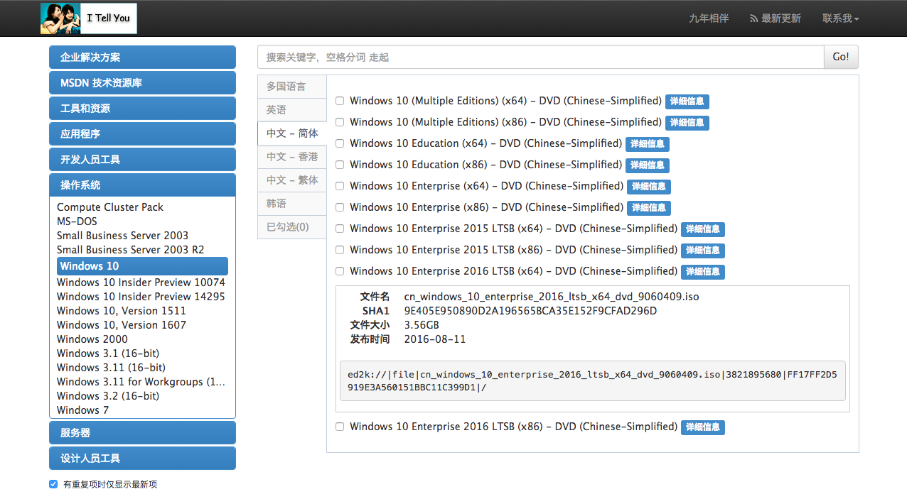
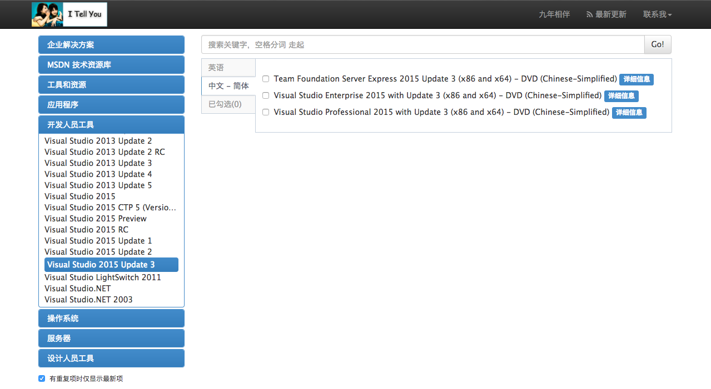

声明
本教程不得用于任何形式的商业用途，如果需要转载请与作者SCP-173联系，如果发现未经允许复制转载，将保留追求其法律责任的权利。
这里需要说明一下，笔者不建议在Windows环境下进行深度学习的研究，一方面是因为Windows所对应的框架搭建的依赖过多，社区设定不完全；另一方面，Linux系统下对显卡支持、内存释放以及存储空间调整等硬件功能支持较好。如果您对Linux环境感到陌生，并且大多数开发环境在Windows下更方便操作的话，希望这篇文章对您会有帮助。
关于计算机的硬件配置说明
推荐配置
如果您是高校学生或者高级研究人员，并且实验室或者个人资金充沛，建议您采用如下配置：
- 主板：X99型号或Z170型号
- CPU：i7-5830K或i7-6700K 及其以上高级型号
- 内存：品牌内存，总容量32G以上，根据主板组成4通道或8通道
- SSD：品牌固态硬盘，容量256G以上
- 显卡：NVIDIA GTX 1080 Ti、NVIDIA GTX 1080、NVIDIA GTX 1070、NVIDIA GTX 1060 (顺序为优先建议，并且建议同一显卡，可以根据主板插槽数量购买多块，例如X99型号主板最多可以采用×4的显卡)
- 电源：由主机机容量的确定，一般有显卡总容量后再加200W即可
最低配置
如果您是仅仅用于自学或代码调试，亦或是条件所限仅采用自己现有的设备进行开发，那么您的电脑至少满足以下几点：
- CPU：Intel第三代i5和i7以上系列产品或同性能AMD公司产品
- 内存：总容量4G以上
CPU说明
- 大多数CPU目前支持多核多线程，那么如果您采用CPU加速，就可以使用多线程运算。这方面的优势对于服务器CPU集群和多核并行CPU尤为关键
显卡说明
- 如果您的显卡是非NVIDIA公司的产品或是NVIDIA GTX系列中型号的第一个数字低于4或NVIDIA的GT系列，都不建议您采用此类显卡进行加速计算，例如
NVIDIA GT 910、NVIDIA GTX 450等等。 - 如果您的显卡为笔记本上的GTX移动显卡（型号后面带有标识M），那么请您慎重使用显卡加速，因为移动版GPU很容易发生过热烧毁现象。
- 如果您的显卡，显示的是诸如
HD5000,ATI 5650等类型的显卡，那么您只能使用CPU加速 - 如果您的显卡为Pascal架构的显卡（
NVIDIA GTX 1080,NVIDIA GTX 1070等），您只能在之后的配置中选择Visual Studio 2015和CUDA 8.0
基本开发环境搭建
1. Microsoft Windows 版本
关于Windows的版本选择，本人强烈建议对于部分高性能的新机器采用Windows 10作为基础环境，部分老旧笔记本或低性能机器采用Windows 7即可，本文环境将以Windows 10作为开发环境进行描述。对于Windows 10的发行版本选择，笔者建议采用Windows_10_enterprise_2016_ltsb_x64作为基础环境。
这里推荐到MSDN我告诉你下载，也感谢作者国内优秀作者雪龙狼前辈所做出的贡献。

直接贴出热链，复制粘贴迅雷下载：
ed2k://|file|cn_windows_10_enterprise_2016_ltsb_x64_dvd_9060409.iso|3821895680|FF17FF2D5919E3A560151BBC11C399D1|/
2. 编译环境Microsoft Visual Studio 2010 - 2015
(安装CPU版本非必须安装)
CUDA编译器为Microsoft Visual Studio，版本从2010-2015，其中cuda7.5仅支持2010、2012、2013，cuda8.0仅支持2015版本，本文采用Visual Studio 2015 Update 3。
同样直接贴出迅雷热链：
ed2k://|file|cn_visual_studio_professional_2015_with_update_3_x86_x64_dvd_8923256.iso|7745202176|DD35D3D169D553224BE5FB44E074ED5E|/

3. Python环境
python环境建设推荐使用科学计算集成python发行版Anaconda，Anaconda是Python众多发行版中非常适用于科学计算的版本，里面已经集成了很多优秀的科学计算Python库。
对于搞科学计算与深度学习的朋友们，建议安装Anconda2.7版本，如果您喜欢使用Anaconda3.5版本也没有太大问题，关于很多早期的python3.5不兼容问题现在已经全部解决，本文默认使用Anaconda2.7
下载地址： Anaconda
4. GCC编译环境
gcc/g++是Windows环境与Linux环境非常大的一个差别点。不管是cpu版本还是gpu版本都需要安装GCC编译环境。 本文提供两种解决方案：
- MinGW Minimalist GNU for Windows，安装好Anaconda之后在CMD或者Powershell中输入：
conda install mingw libpython
- MSYS2 一部分读者自己本身已经具有了Python环境，再安装Anaconda会造成很大的不便，那么本文推荐安装MSYS2，网站上有详细的如何安装的说明，本文不再赘述。
5. CUDA
(仅使用CPU版本不必安装) CUDA Toolkit是NVIDIA公司面向GPU编程提供的基础工具包，也是驱动显卡计算的核心技术工具。 直接安装CUDA8.0即可 下载地址：https://developer.nvidia.com/cuda-downloads
在下载之后，按照步骤安装，不建议新手修改安装目录，同上，环境不需要配置，安装程序会自动配置好。
6. （可选）加速库CuDNN
从官网下载需要注册账号申请，两三天批准。网盘搜索一般也能找到最新版。
Windows目前就是cudnn-7.0-win-x64-v5.0-prod.zip。
下载解压出来是名为cuda的文件夹，里面有bin、include、lib，将三个文件夹复制到安装CUDA的地方覆盖对应文件夹，默认文件夹在：C:\Program Files\NVIDIA GPU Computing Toolkit\CUDA
Keras 框架搭建
安装
Keras深度学习框架是基于Theano或Tensorflow框架安装的，所以首先要准备底层框架的搭建，然而目前Tensorflow不支持Windows版本，所以本文选用Theano安装即可 在CMD命令行或者Powershell中输入：
pip install theano -U --pre
pip install keras -U --pre
或者想要加速开发版本，用（前提是已经git, conda install git）
pip install --upgrade --no-deps git+git://github.com/Theano/Theano.git
环境配置
在我的电脑上右键->属性->高级->环境变量->系统变量中的path，添加
C:\Anaconda2;C:\Anaconda2\Scripts;C:\Anaconda2\MinGW
\bin;C:\Anaconda2\MinGW\x86_64-w64-mingw32\lib;
注意，本文将Anaconda安装至C盘根目录，根据自己的情况进行修改；另外在之前安装gcc/g++时采用MSYS2方式安装的，修改并重新定位MinGW文件夹，并做相应修改。
之后并新建变量PYTHONPATH，并添加
C:\Anaconda2\Lib\site-packages\theano;
- 修改默认后端
打开C:\Users\当前用户名\.keras,修改文件夹内的keras.json文件如下：
{
"image_dim_ordering":"th",
"epsilon":1e-07,
"floatx":"float32",
"backend":"theano"
}
- Theano加速配置
在用户目录，也就是
C:\Users\当前用户名\，新建.theanorc.txt。 这个路径可以通过修改Theano的configparser.py来改变。Theano装在Anaconda\Lib\site-packages里 .theanorc.txt的内容：
[global]
openmp=False
device = gpu
optimizer_including=cudnn #不用cudnn的话就不要这句，实际上不用加，只要刚刚配置到位就行
floatX = float32
allow_input_downcast=True
[lib]
cnmem = 0.8 #theano黑科技，初始化显存比例
[blas]
ldflags= #加速库
[gcc]
cxxflags=-IC:\Anaconda2\MinGW
[nvcc]
fastmath = True
--flags=-LC:\Anaconda2\libs #改成自己装的目录
--compiler_bindir=D:\Microsoft Visual Studio 12.0\VC\bin #改成自己装的目录
#最后记得把汉字全删了
如果您的所安装的是CPU加速版本，那么.theanorc.txt文件配置如下：
[global]
openmp=True
device = cpu
floatX = float32
allow_input_downcast=True
[gcc]
cxxflags=-IC:\Anaconda2\MinGW
之后可以验证keras是否安装成功,在命令行中输入Python命令进入Python变成命令行环境：
>>>import keras
Using Theano(Tensorflow) backend.
>>>
没有报错，那么Keras就已经成功安装了
加速测试
环境测试
在命令行中进入Python环境，输入：
import theano
会出现一系列信息，包括显卡型号、浮点数类型、是否采用CNmem和cuDNN（如果使用了的话）等等，那么恭喜你，环境彻底配置成功。 如果使用了Windows系统的读者，电脑上可能会出现，debug的字样，这是第一次使用，在编译生成运行库，属于正常现象。
加速库测试
Python环境下输入：
import numpy
id(numpy.dot) == id(numpy.core.multiarray.dot)
如果得到的结果为False，说明你的除了gpu加速还得到了数学库blas加速，按照教程顺序配置的Linux用户是一定可以得到False结果的；Windows用户得到True也没有关系，因为Anaconda中已经内置了MKL加速库，如果想使用Openblas可以按照文末的联系方式联系我。
速度测试
新建一个文件test.py，内容为：
from theano import function, config, shared, sandbox
import theano.tensor as T
import numpy
import time
vlen = 10 * 30 * 768 # 10 x #cores x # threads per core #这里可以加一两个0，多测试一下，记得去掉汉字
iters = 1000
rng = numpy.random.RandomState(22)
x = shared(numpy.asarray(rng.rand(vlen), config.floatX))
f = function([], T.exp(x))
print(f.maker.fgraph.toposort())
t0 = time.time()
for i in xrange(iters):
r = f()
t1 = time.time()
print("Looping %d times took %f seconds" % (iters, t1 - t0))
print("Result is %s" % (r,))
if numpy.any([isinstance(x.op, T.Elemwise) for x in f.maker.fgraph.toposort()]):
print('Used the cpu')
else:
print('Used the gpu')
在GTX 970显卡下，输出结果大概是0.21秒，在一百倍运算量下19秒，可以进行对比。 理论上，相比较主频为3.3GHz的CPU，加速比应该是75倍，但不同的ssd和内存限制了IO接口传输速度。
Keras中mnist数据集测试
下载Keras开发包
git clone https://github.com/fchollet/keras.git
cd keras/examples/
python mnist_mlp.py
程序无错进行，至此，keras安装完成。
一个Anaconda3中配置遇到的异常解决方式
目前发现使用Anaconda3安装theano时可能会有一个冲突：
AttributeError：module ‘configparser’ has no attribute ‘SafeConfigParser’
暂时只有用以下方法处理：
对Anaconda3\Lib\site-packages\theano\configparser.py更改文件名，比如改为config_parser.py，在pycharm或其他IDE中随意运行一个cnn脚本，对遇到的每一个提示错误手动更改引用到的文件名为theano.config_parser，在将所有引用到这个文件的位置都改正后，应该就没有问题了。
声明与联系方式
由于作者水平和研究方向所限，无法对所有模块都非常精通，因此文档中不可避免的会出现各种错误、疏漏和不足之处。如果您在使用过程中有任何意见、建议和疑问，欢迎发送邮件到scp173.cool@gmail.com与中文文档作者取得联系.
本教程不得用于任何形式的商业用途，如果需要转载请与作者或中文文档作者联系，如果发现未经允许复制转载，将保留追求其法律责任的权利。
作者：SCP-173 E-mail ：scp173.cool@gmail.com 如果您需要及时得到指导帮助，可以加微信：SCP173-cool，酌情打赏即可